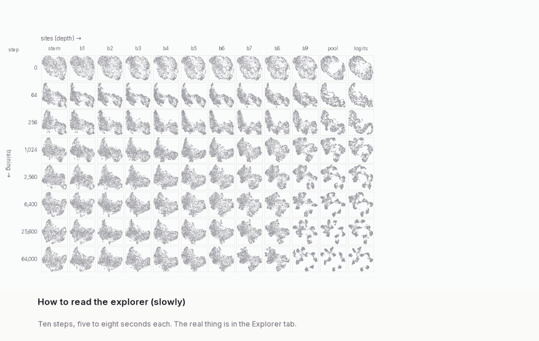

The grid. Rows are checkpoints (training step and validation accuracy), columns are sites, from the stem to the logits. Each panel shows the same probe images at one snapshot (a checkpoint and a site), placed by a 2-d UMAP of that snapshot's activations. Positions are for display only; no number on this page is computed from them.
The block (outlined) is a run of snapshots along one row (a layer block) or one column (a time block); one snapshot alone is a single-snapshot block. Its block operator $\bar M$ averages the lazy walks $M_c$ of its snapshots. The colouring comes from that block only and is painted on every panel, so you can follow the same images to other layers and checkpoints.
The side panel describes the selection: representative images, the eigenvalues of $\bar M$, how much grouping into $k$ groups keeps, retention $\rho_c$ in every snapshot of the row or column, and per-snapshot numbers.
Extras. Tick more options for the kernel rules, per-image diagnostics, image statistics, a second network's layout and the per-snapshot table. Layout: seed 1 places the points by a second network's UMAP while colours still come from the first; spectral places them by a UMAP of each snapshot's diffusion coordinates (the leading eigenfunctions of that snapshot's own walk), so you see the geometry the construction sees. The per-image diagnostics (loss, input-Jacobian norm, gradient alignment) and CIFAR class only colour; none enters the kernel or the sets. Definitions: glossary.